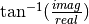

ComputeModulusAndPhase¶
This application computes the modulus and the phase of a complex SAR image or an image with 2 components (real and imaginary parts).
Description¶
This application computes the modulus and the phase of a complex SAR image. The input should be a single band image with complex pixels or a 2 bands image (real and imaginary components in separate bands).
Parameters¶
Input Image -in image Mandatory
Input image (complex single band or 2 bands (real/imaginary parts))
Modulus -modulus image [dtype] Mandatory
Modulus of the input image computes with the
following formula: where real and imag
are respectively the real and the imaginary part of the input complex image.
Phase -phase image [dtype] Mandatory
Phase of the input image computes with the following formula:
 where real and imag are respectively the real and
the imaginary part of the input complex image.
Available RAM (MB) -ram int Default value: 256
Available memory for processing (in MB).
Load parameters from XML -inxml filename.xml
Load application parameters from an XML file.
Save parameters to XML -outxml filename.xml
Save application parameters to an XML file.
Examples¶
From the command-line:
otbcli_ComputeModulusAndPhase -in monobandComplexFloat.tif -modulus modulus.tif -phase phase.tif
From Python:
import otbApplication
app = otbApplication.Registry.CreateApplication("ComputeModulusAndPhase")
app.SetParameterString("in", "monobandComplexFloat.tif")
app.SetParameterString("modulus", "modulus.tif")
app.SetParameterString("phase", "phase.tif")
app.ExecuteAndWriteOutput()
Limitations¶
The application takes as input single band image with complex pixels or a 2 bands image (real and imaginary part in separate bands).